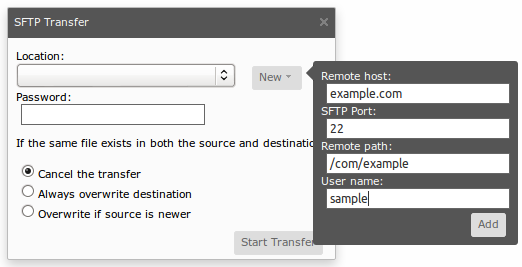

Importing
Importing local folders and files
To import files from your local computer, do the following:
- Create and navigate to a folder in Orion that you want to import into.
- Click the Actions button and select Import local file... from the drop down menu.
- If the file is a zip and you want it to be extracted for you, select the Unzip *.zip files option.
- Either drag a local file into the target area, or browse to a file by clicking Upload.
Importing files over HTTP
Any web-accessible file can be imported into Orion by doing the following:
- Create and navigate to a folder in Orion that you want to import into.
- Click the Actions button and select Import from HTTP... from the drop down menu.
- Enter the URL of the file to import.
- If the file is a zip and you want it to be extracted for you, select the Unzip *.zip files option.
- Click Submit or press Enter.
Importing folders and files over SFTP
You can also import files from another networked computer using the
SSH File Transfer Protocol (SFTP):
- Create and navigate to a folder in Orion that you want to import into.
- Click the Actions button and select SFTP from... from the drop down menu.
- Fill in or select the host and path to import files from.
- Click Start Transfer to begin importing. Progress will be shown in the title area until the import completes.

Updating this document
This document is maintained in a collaborative wiki. If you wish to update or modify this document please visit
http://wiki.eclipse.org/Orion/Documentation/User_Guide/Tasks/Importing